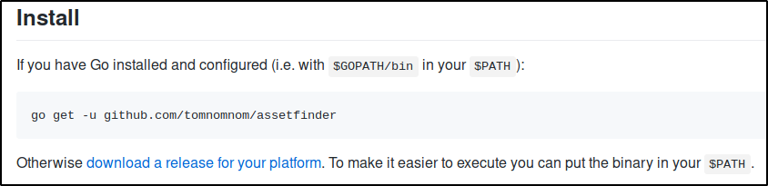

Finding Subdomains with Assetfinder
Sublist3r is fine, but this is better:
AssetFinder
https://github.com/tomnomnom/assetfinder

Now, should be installed:
We can try to search for subdomains
You need to be careful: you can find duplicates!!
One good thing to know is that shows not only .tesla domains,
but even assets or other domain owned by tesla!!!
With the experience, it is better to run the normal command and grep for domains:
(See the script into subnode)